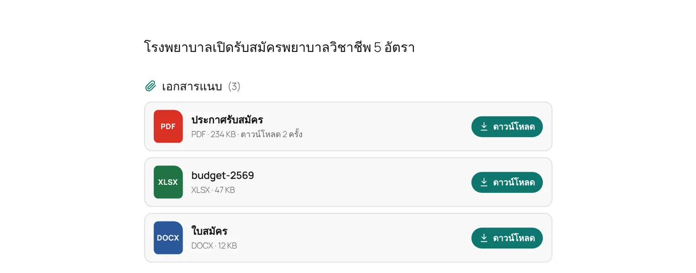
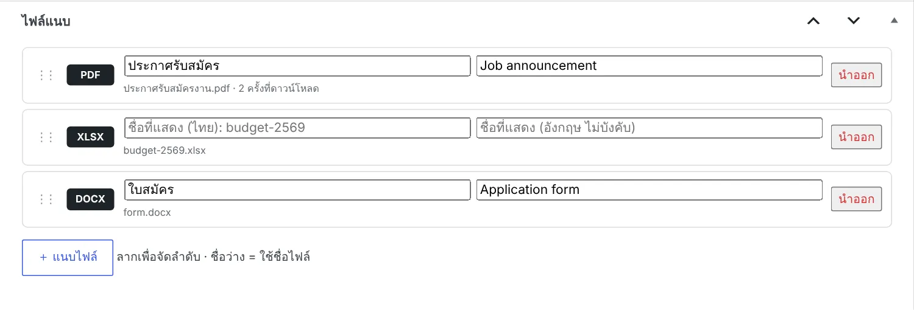
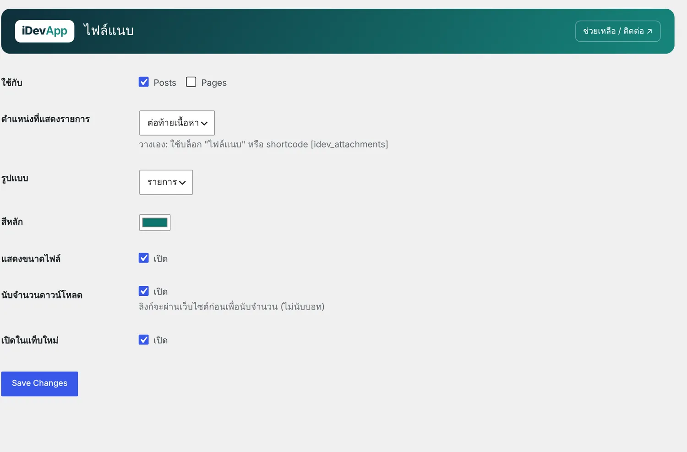

1ความสามารถ

- ลากเพื่อจัดลำดับ ชื่อที่แสดงไทย/อังกฤษ (ว่าง = ใช้ชื่อไฟล์)
- แบบ รายการ หรือ การ์ด
- วางท้ายเนื้อหา ก่อนเนื้อหา หรือวางเองด้วยบล็อก
- นับจำนวนดาวน์โหลด ไม่นับบอท · เปิดในแท็บใหม่
2เริ่มต้นใช้งาน
- แนบไฟล์
เปิดข่าวหรือหน้า กล่อง ไฟล์แนบ ใต้ตัวแก้ไข กด แนบไฟล์ เลือกจาก Media Library (เลือกหลายไฟล์ได้) แล้วตั้งชื่อที่แสดง

กล่องไฟล์แนบในหน้าแก้ไขข่าว - ตั้งค่า
iDevApp › ไฟล์แนบ ใช้กับประเภทเนื้อหาใด ตำแหน่ง รูปแบบ สี แสดงขนาดไฟล์ และนับดาวน์โหลด

ตั้งค่าไฟล์แนบ
3บล็อกและ Shortcode
| Shortcode | ผล |
|---|---|
[idev_attachments] | รายการไฟล์ของเรื่องนี้ (บล็อก ไฟล์แนบ) |
[idev_attachments post="25" style="cards" title="เอกสารประกอบ"] | ไฟล์ของโพสต์อื่น แบบการ์ด และหัวข้อเอง |
ธีมที่วางรายการเองให้ประกาศ add_theme_support('idev-post-attachments') · PHP: idev_attachments_render($post_id)